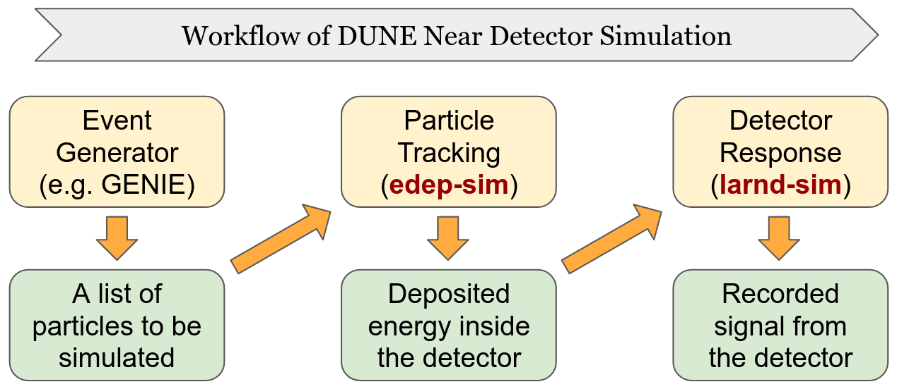

Introduction
Contents
Introduction#
edep2supera is a software tool developed for the DUNE near detector (DUNE-ND) collaboration.
Before starting, it is useful to agree-on / introduce some concepts to be on the same page!
lartpc_mlreco3dis a machine learning (ML) based data reconstruction chain. The goal ofedep2superais to provide information necessary, called “labels”, to optimize ML algorithms inlartpc_mlreco3dso that it can be used for the DUNE-ND data.edep2superarequires input data that is produced from DUNE-ND simulation workflow. In particular,edep2superais designed to take data files generated byedep-simin the diagram below.

Ultimately lartpc_mlreco3d should be trained with larnd-sim output files which include realistic detector effects. The value of edep2supera is to provide:
put a foundation of generating labels to optimize the reconstruction chain
a benchmark of the reconstruction algorithms without detector effects
In particular, 1 is critical to ensure interpretation of simulated information is correct. This validation allows us to compare the known performance of the reconstruction chain that is trained on the equivalent stage of a simulation (i.e. without detector effects), which has been used to validate the label generation process across experiments.
Pre-requisites#
There are two key points to be aware: how to setup the software stack and how to run edep-sim in a way that is compatible with edep2supera.
Software stack#
edep2supera requires larcv2 and SuperaAtomic to be installed and built. We strongly recommend users to use a Docker or Singularity software containers prepared by the maintainers of edep2supera.
edep-sim file#
edep2supera (and underlying algorithms) assumes edep-sim is run in a certain way to maximize the level of details (and thus amount of) simulation information stored. In particular, when you run edep-sim, please make sure to include these lines:
/edep/hitSeparation TPCActive_shape -1 mm
/edep/hitSagitta drift 1.0 mm
/edep/hitLength drift 1.0 mm
/edep/db/set/neutronThreshold 0 MeV
/edep/db/set/lengthThreshold 0 mm
/edep/db/set/gammaThreshold 0 MeV
/edep/random/timeRandomSeed
/edep/update
The most critical nature required (and enabled above) is that a generated trajectory segment (i.e. TG4HitSegment if you wonder) is not shared by multiple particles, and is always asssigned to a unique particle. This helps to disambiguate energy depositions that are otherwise mixed between particles.
For developers#
If you are to develop the code, most likely you would want to install SuperaAtomic and edep2supera. We recommend you to use the same container described above, then locally install the developer version of these softwares.
SuperaAtomic Installation#
The command below will build and install SuperaAtomic to your local area ($HOME/.local) which is prioritized over the pre-installed one under the system path.
git clone https://github.com/DeepLearnPhysics/SuperaAtomic
cd SuperaAtomic
export SUPERA_WITHOUT_PYTHON=1
python3 setup.py install --user
Note you want to set SUPERA_WITHOUT_PYTHON=1. Without specifying this, SuperaAtomic will be built with pybind11 which would be incompatible with edep2supera. Don’t worry: SuperaAtomic will still be usable in Python after you build edep2supera.
In development, after you modify your code, simply repeat:
python3 setup.py install --user
(and perhaps you may also have to re-install edep2supera if C++ dependent source code has changed).
edep2supera Installation#
Similarly, below is how you can install edep2supera.
git clone https://github.com/DeepLearnPhysics/edep2supera
cd edep2supera
python3 setup.py install --user
After you modify the source code, again simply try:
python3 setup.py install --user